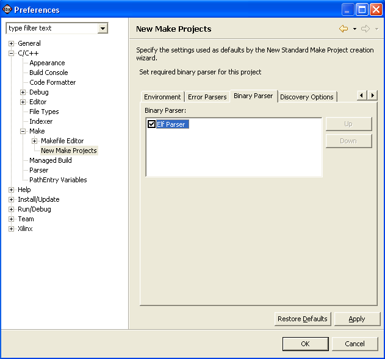

Binary Parser page, C/C++ Preferences window
You can view a list of binary parsers on the Binary Parser page of the C/C++ Preferences window.

- Binary Parser
- Select binary parsers from the list, and changed the
order in which they are used.
-

Build overview

Selecting a binary parser

Project properties